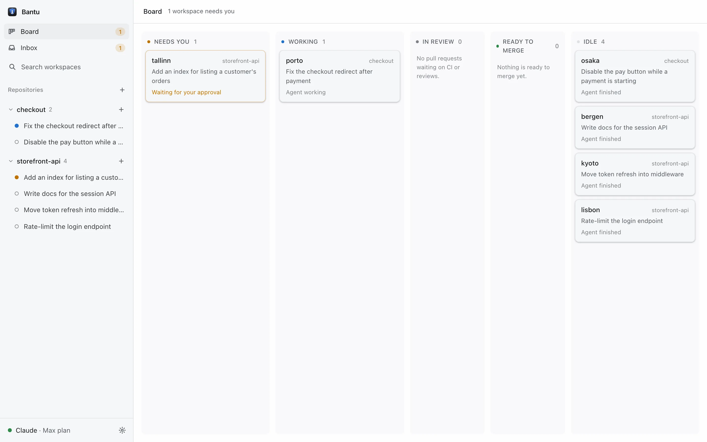

One board for every agent
Every workspace, across all your repositories, sorted by what is true right now: needs you, working, in review, ready to merge.
- A worktree for every task. Its own branch and its own ten ports, so nothing collides with your checkout or another agent.
- Agents that manage agents. A chat can split a task into workspaces, wait for them and merge the results.
- Conflict radar. Bantu test-merges every pair of workspaces and warns you before two of them change the same lines.
